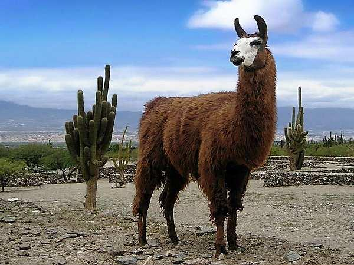

Interesting Facts about Llama
- Just like camels, llamas can also survive for weeks without water because they collect moisture from the food that they eat.
- Llamas are compared to dogs and horses because of their trustworthiness and capability to carry heavy loads.
- Llamas have 32 teeth in total and the dentition of adults contains, 1/3 canines, 2/2 premolars, 3/2 molar, and 1/1 canines.
- Unlike camels, llamas don’t have the isolated canine-like premolar.
- The ears of a llama are banana shaped: long and curved inward.
- The toes of llamas are different from those of camels: they are more separated with different planter pads.
- Llamas are intelligent animals and they can be easily trained as compared to other domestic animals.
- Most of the animals bite when agitated, but llamas spit. Yes, if anyone disturbs a llama then they spit on them.
- Although llamas belong to the family of camels, but they don’t have hump on their back.
- Llamas can carry 20% to 30% of their body weight. They can easily carry weight on highly elevated regions which is somewhat difficult for the other mountain climbing animals.
- One of the humorous facts about llamas is that they refuse to carry the load if overburdened. They often lie down on the ground, spit, or sometimes kick at their owners when forced to move. They keep on sitting until the burden is reduced.
- Llamas’ digestive system has one stomach with three compartments which makes them suitable to survive on sparse vegetation in mountainous areas.
- Llamas are social animals and like to stay in a herd. Just like humans, llamas also follow the social ranking method. The more disciplined llamas are kept at the top of the ladder. Llamas that spit and fight are kept at the lower order, but these social rankings are not static. A small fight can destroy the disciplined character of a llama and it will then fall down the ladder in social rankings.
- During the birth of a cria, the female llamas gather around the mother llama in order to protect it from male llamas and predators.
- Dams give birth in a standing position and the baby takes birth in 30 minutes only.
- Llamas can breed in three situations: harem breeding, field breeding, and hand breeding. Harem breeding involves leaving the male llamas with female llamas for most of the years; in case of field breeding, the female and male llamas are left in a field for some period of time; and in the hand breeding situation, the male and female llamas are bred, separated, and then rebred, until one of them refuses the breeding.
- The female llama can take out only half inch of its tongue from the mouth and therefore it is not able to lick the baby, instead it nuzzles and hums on the newborns.
- Llamas are used as guards in the western regions of the United States to protect the livestock, especially sheep, from the predators.
- Llamas are so peaceful and calm animals that even a kid can raise llamas without any help.
- Llama’s manure is almost odourless.